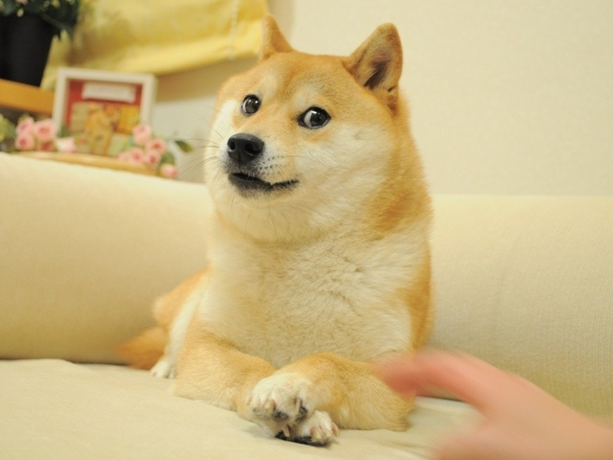

2013: Memes + Cryptocurrencies = Dogecoin
Doge
Doge was the Meme of the Year in 2013 at the site
Know Your Meme. The meme orignates from a blog post
about a mostly happy but generally neurotic little Shiba Inu whose
actual name is かぼちゃん (Kabo-chan).

Crypto
Cryptocurrencies can be traced back to at least 1983, though the
most well-known cryptocurrency Bitcoin was ceated in 2009. It's
popularity grew of the next several years. It is widely considered
that 2013 was the first year Bitcoin was known to an average person
living in the United States of America.
Dogecoin
Inevitably, meme culture and cryptocurrency culture collided in 2013
when Dogecoin was created by Jackson Palmer and (not really)
Shibetoshi Nakamoto. The menu structure of Dogecoin's website
mirrors the silly language typically attributed to the Doge meme.
- so home
- much wallets
- very community
- etc.
Note: This page uses materials from 3rd parties,
possibly including copyrighted materials. This page intentionally does
not hyperlink to sources to focus on very basic HTML. This page should
not be used as a model when constructing Web content that
makes used of copyrighted materials and content from 3rd parties.